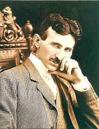

Мій мозок тільки приймальний пристрій. У космічному просторі існує якесь ядро звідки ми черпаємо знання, сили, натхнення.
Нікола Тесла.

Нікола́ Те́сла — сербський та американський винахідник, інженер-електрик та фізик. Народився 10 липня 1856 року в Сміляні. Він мав унікальну здатність детально уявляти свої винаходи в голові і навіть "протестувати" їх без жодного запису чи креслення.
Тесла здобув освіту в Грацькому політехнічному інституті та Празькому університеті. Після роботи у телефонній компанії в Будапешті, де він винайшов індукційний електродвигун, він емігрував до США у 1884 році та недовго працював з Томасом Едісоном.
Він був центральною фігурою у так званій "Війні струмів", просуваючи змінний струм (AC) як стандарт для передачі електроенергії, на відміну від постійного струму Едісона.
Нікола Тесла помер на самоті 7 січня 1943 року в готелі New Yorker у віці 86 років. Його смерть залишається загадкою, оскільки ФБР конфіскувало його особисті речі та документи, що призвело до численних теорій змови.
Незважаючи на те, що він помер у бідності, його внесок у науку є неоціненним. Його ім'ям названо одиницю вимірювання магнітної індукції (Тесла, Tл). Його ідеї лягли в основу радіо, дистанційного керування, бездротової передачі енергії та сучасних електродвигунів.